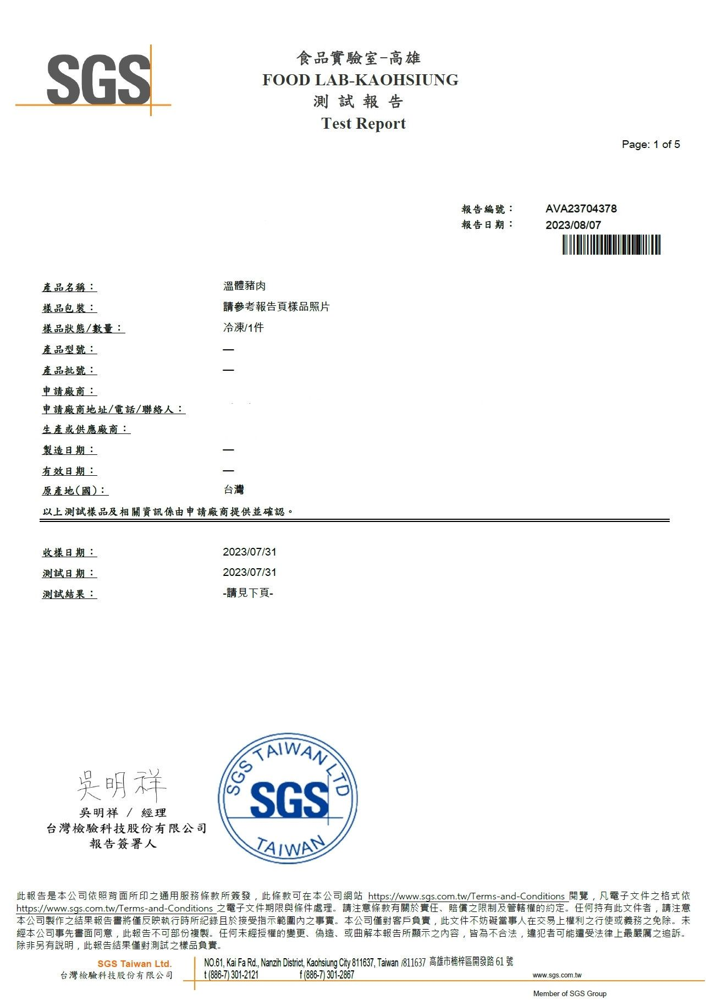
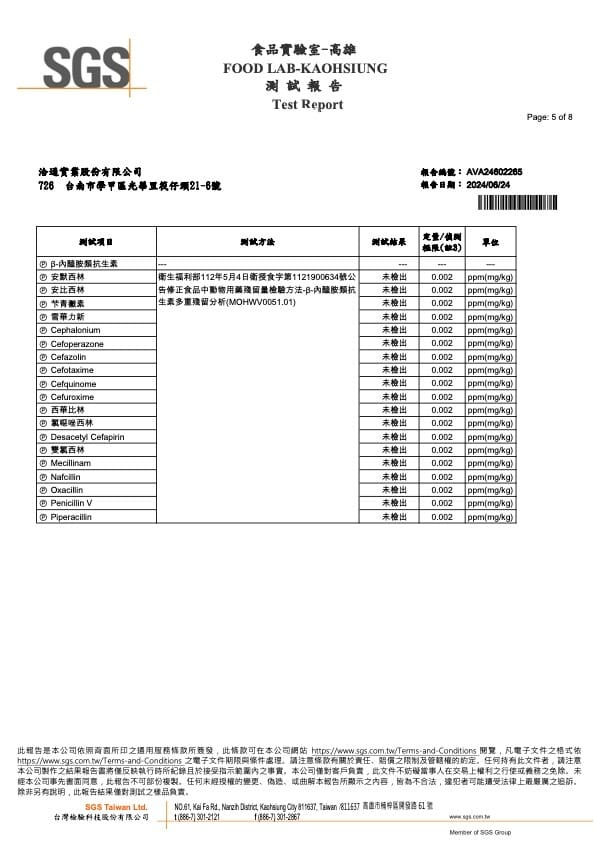

生產溯源 Traceability
我們對於食材的選用與來源透明度有著嚴格的要求，確保每一位顧客都能安心享用。 本頁面詳細紀錄了主要肉品（豬肉與牛肉）的進貨與檢驗資訊。
台灣特選梅花豬 (去骨)

主要用於燉煮、香煎豬排
項目
內容
證明文件
品質標準
CAS 臺灣優良農產品 (或同等認證)
CAS 驗證書號
藥物殘留檢驗
零檢出 (萊克多巴胺、抗生素等)
SGS 檢驗報告 (或同級認證機構)
證明文件名稱：豬肉藥物殘留檢驗報告
報告號碼：TWD-P-20251101 (範例)
檢驗日期：每季定期更新 (最近一次：2025/11/01)
主要用於燉煮、香煎豬排
豬肉類進貨資訊：台灣豬隻
1. 產品規格與產地證明
- 肉品名稱：台灣特選梅花豬 (去骨)
- 生產地：中華民國臺灣 (特定合作牧場：雲林/屏東) 確保本地新鮮供應鏈
- 生產證明：畜牧場登記證影本、牧場出貨單
- 進貨商：信安食品有限公司 (合格肉品供應商)
- 進貨頻率：每週兩次，確保新鮮度
2. 臺灣豬隻品質與檢驗報告
報告號碼：TWD-P-20251101 (範例)
檢驗日期：每季定期更新 (最近一次：2025/11/01)
澳洲精選嫩肩牛/沙朗牛

主要用於牛排主餐
項目
內容
證明文件
品質標準
CAS 臺灣優良農產品 (或同等認證)
CAS 驗證書號
藥物殘留檢驗
零檢出 (萊克多巴胺、抗生素等)
SGS 檢驗報告 (或同級認證機構)
證明文件名稱：豬肉藥物殘留檢驗報告
報告號碼：TWD-P-20251101 (範例)
檢驗日期：每季定期更新 (最近一次：2025/11/01)
主要用於牛排主餐
牛肉類進貨資訊：澳洲牛肉
1. 產品規格與產地證明
- 肉品名稱：澳洲精選嫩肩牛/沙朗牛 (冷藏/真空包)
- 生產地：澳洲 (Australia) (主要產區：昆士蘭/新南威爾斯) 著名肉牛飼養區
- 生產證明：澳洲官方認證出口衛生證明 (Australian Government Health Certificate) 證明肉品符合出口檢疫標準
- 進貨商：海貿國際貿易公司 (合格肉類進口商)
- 進貨頻率：每月一次，恆溫冷藏運輸
- 追溯編號：(肉品進口報單號碼/批次號碼)
2. 澳洲牛肉品質與檢驗報告
報告號碼：TWD-P-20251101 (範例)
檢驗日期：每季定期更新 (最近一次：2025/11/01)